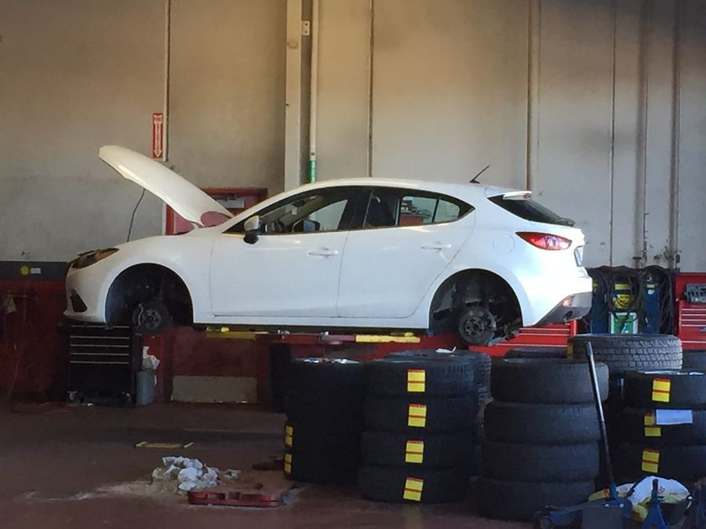

Küçükçekmece · İstasyon Mahallesi
Abbas OtoLastik
Lastik ve jant için pit stop: satış, değişim, tamir, balans. Haftanın her günü 08:30–22:30.
Lastiğinizin yanağında ne yazıyor?
Üç sayıyı seçin; lastiğin üzerine yazalım, fiyatını tek dokunuşla sorun.
Pit stop beş adımda
Bir lastik değişimi genellikle bu sırayla ilerler. İlk iki adımı evden, telefonunuzdan halledebilirsiniz.
Ebatı okuyun
Lastiğin yanağında 205/55 R16 gibi bir yazı var. Okuyun ya da fotoğrafını çekin. Nerede yazıyor?
Sorun
Ebat seçici mesajınızı hazırlar. WhatsApp'tan gönderin ya da arayın; fiyatı ve seçenekleri konuşalım. Ebat seçiciyi açın
Pite girin
Gençosman Sokak No:39A, İstasyon Mahallesi. Beklememek için yola çıkmadan haber verin. Yol tarifi
Söküm, kontrol, takım
Teker sökülür; jant, supap ve lastiğin içi gözden geçirilir, lastik janta oturtulur.
Balans, basınç, çıkış
Teker balansa alınır, bijonlar çapraz sırayla sıkılır, basınç aracınızın değerine göre ayarlanır.
Pitte yapılan işler
Adımızda yazdığı gibi: lastik ve jant, tamir ve satış.
Lastik
Lastik sayfasıLastik satışı
Ebatınıza ve mevsime göre seçenekler. Marka ve fiyat için ebatınızı yazmanız yeterli.
Lastik değişimi
Yazlık–kışlık geçişi ya da yeni lastik takımı; söküm, takım ve balans birlikte.
Lastik tamiri
Patlak ve hava kaçağı. Hasar yanaktaysa tamir yerine değişim gerekir; bakıp söyleyelim.
Balans ayarı
Belirli bir hızda direksiyon titriyorsa ilk bakılacak yer.
Hava ve basınç kontrolü
Dört teker ve stepne, aracınızın etiketindeki değere göre.
Jant
Jant sayfasıJant tamiri
Çukur ya da kaldırım darbesinden sonra eğrilen, hava kaçıran jantlar için. Fotoğrafını gönderin, ne yapılabileceğini konuşalım.
Jant satışı
Aracınızın bijon düzenine ve ölçüsüne uyan jant için künyeyi yazın; künye çizicimiz yardımcı olur.

5,0
Google'da 1121 değerlendirmenin ortalaması
Beş bijonun beşi de sıkılı. Yorumları buraya kopyalamıyoruz; hepsi Google'da, müşterilerin kendi cümleleriyle duruyor.
Yorumları Google'da okuyunAyda bir, dört kontrol
Lastik, aracınızın yola değen tek parçası. Bu dört bakış birkaç dakikanızı alır.
Basınç
Soğuk lastikte ölçün. Doğru değer sürücü kapısının iç kenarındaki etikette yazar.
Basınç rehberi ve çeviriciDiş derinliği
Yasal alt sınır 1,6 mm. Oluklardaki aşınma göstergesine yaklaştıysa vakit gelmiştir.
Diş derinliği cetveliYanak
Şişlik, kesik ya da çatlak var mı? Yanaktaki hasar tamir edilmez.
Belirti seçiciYaş
Yanaktaki dört haneli DOT kodu, lastiğin üretim haftasını ve yılını söyler.
DOT kodu okuyucu
Her gün 08:30–22:30
Pazar dahil haftanın yedi günü. İş çıkışı da, akşam yemeğinden sonra da uğrayabilirsiniz.
- Pzt08:30
22:30 - Sal08:30
22:30 - Çar08:30
22:30 - Per08:30
22:30 - Cum08:30
22:30 - Cmt08:30
22:30 - Paz08:30
22:30
Her gün 08:30–22:30
İstasyon Mah., Namık Kemal Cad., Gençosman Sk. No:39A, 34303 Küçükçekmece/İstanbul
Sık sorulanlar
Aklınızdaki soru burada yoksa arayın ya da yazın.
Fiyatı önceden öğrenebilir miyim?
Evet. Ebat seçiciden lastik ebatınızı seçin; hazırlanan mesajı WhatsApp'tan gönderin ya da arayın, size bilgi verelim.
Randevu gerekli mi?
Beklememeniz için gelmeden önce aramanızı ya da yazmanızı öneririz.
Lastik ebatımı nereden öğrenirim?
Lastiğin yanağında, jantın hemen dışında büyük harflerle yazar: 205/55 R16 gibi. Şemada her sayının ne anlama geldiğini gösterdik.
Hangi günler açıksınız?
Pazar dahil her gün 08:30–22:30 arası açığız.
Jant tamiri yapıyor musunuz?
Evet; lastik ve jant tamiri ile satışı yapıyoruz. Hasarın onarılıp onarılamayacağı yerine ve büyüklüğüne bağlıdır; fotoğrafını gönderin, bakalım.
Patlayan lastik her zaman tamir edilir mi?
Hayır. Sırt bölgesindeki küçük delikler çoğu zaman onarılır; yanaktaki hasar ve havasız sürülmüş lastik güvenle onarılamaz. Lastiğe bakıp hangisi olduğunu söyleriz.
Sökülen mevsimlik lastiklerimi saklıyor musunuz?
Saklama imkânı için arayıp sorun, bilgi verelim.
Ebatınız hazırsa gerisi tek mesaj
Genişlik, yanak, jant: üç sayıyı seçin, sorunuz yazılmış olarak WhatsApp'ta açılsın.